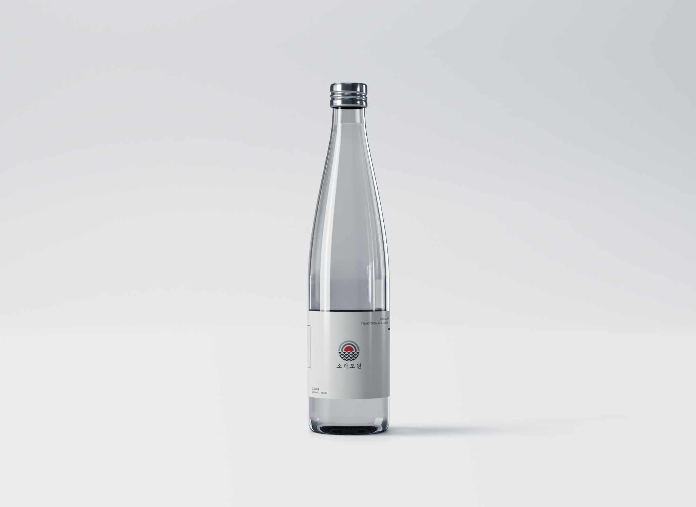

Brand Identity · 2021
Traditional Liquor Brand Design — Sorakdowon
Brand identity for a fictional Korean traditional liquor brand.

- Role
- Brand designer
- Timeline
- Apr – May 2021
- Scope
- Identity · Applications
Design Direction
Sorakdowon pairs a circular landscape mark with a restrained grey, charcoal, and vermilion palette. The identity carries across transparent bottle labels and compact cans, balancing references to Korean visual culture with a minimal contemporary finish.
Landscape symbol
Layered arcs and repeating wave forms create a compact mark that suggests sun, horizon, and water.
Restrained palette
Soft neutrals keep the system quiet while vermilion provides a clear point of recognition.
Application system
The mark and geometric forms scale across bottle labels and cans without losing their simplicity.